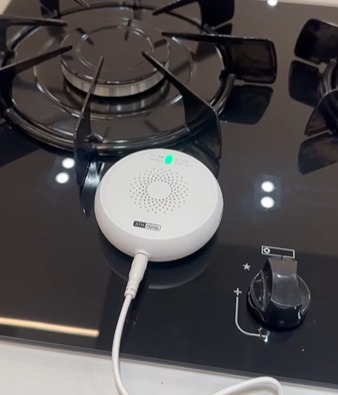

.png)

Descubra como os sistemas de detecção de gás e fumaça podem proteger sua casa e sua família. Explore os recursos avançados, integração com outros dispositivos e dicas para escolher o sistema ideal para suas necessidades.
Vazamentos de gás e princípios de incêndio costumam começar de forma silenciosa, e cada minuto de atraso na detecção pode fazer toda a diferença. Os sensores de gás e fumaça monitoram o ambiente 24 horas por dia, identificando riscos antes que se tornem um problema maior.
Mais do que um equipamento, é uma camada extra de proteção para a sua família, seus colaboradores e o seu patrimônio, funcionando de forma silenciosa até o momento em que for realmente necessária.
Monitoramento constante, alertas instantâneos.

Os sensores identificam a presença de gás inflamável ou fumaça no ambiente e, assim que detectam qualquer alteração, disparam um alarme sonoro local e enviam uma notificação imediata para o seu celular.
Em sistemas integrados à automação, é possível ainda acionar automaticamente o corte do registro de gás ou ligar a exaustão do ambiente, aumentando ainda mais a segurança.

A resposta rápida é o grande diferencial desse tipo de sistema: quanto antes o risco é identificado, maior a chance de evitar um acidente maior, seja um princípio de incêndio ou o acúmulo de gás em um ambiente fechado.
Proteger meu ambientePrevenção é sempre mais barata do que lidar com o problema.

Cozinhas, áreas com botijão de gás e ambientes comerciais são pontos que merecem atenção redobrada. Ter um sensor instalado significa ser avisado imediatamente, mesmo que ninguém esteja no local no momento.
É uma solução especialmente importante para imóveis que ficam vazios por períodos, como casas de temporada, ou para famílias com crianças e idosos.
Entre os principais benefícios estão: proteção contra vazamentos e princípios de incêndio, monitoramento 24 horas por dia, alertas instantâneos no celular, possibilidade de corte automático do gás e tranquilidade para toda a família, mesmo à distância.
Quero mais segurança no meu espaçoFale com a nossa equipe e instale um sistema de detecção de gás e fumaça no seu ambiente.
Entre em contato!